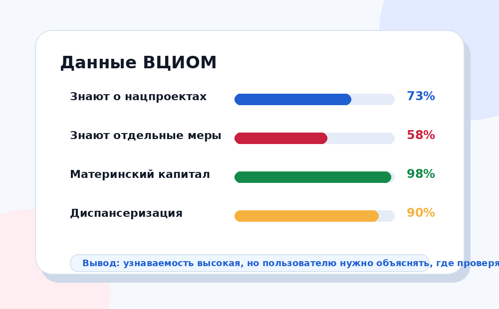

Цифры помогают понять, что люди знают о национальных проектах, какие направления узнают лучше и где остаётся информационный разрыв.

Высокая узнаваемость не означает, что человек хорошо понимает устройство проекта. Поэтому важно различать три уровня: слышал название, знает конкретную меру, понимает, где проверить результат.